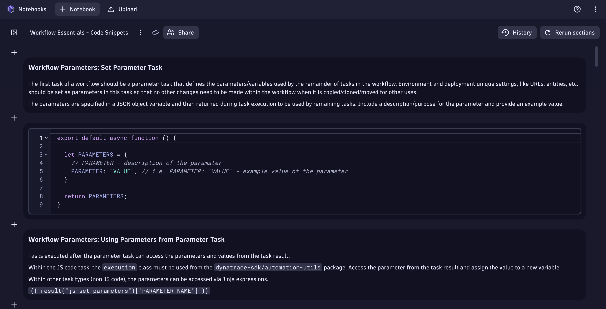

Code Snippets#
Code Snippets Notebook
Workflow Essentials Code Snippets

Workflow Parameters: Set Parameter Task#
The first task of a workflow should be a parameter task that defines the parameters/variables used by the remainder of tasks in the workflow. Environment and deployment unique settings, like URLs, entities, etc. should be set as parameters in this task so that no other changes need to be made within the workflow when it is copied/cloned/moved for other uses.
The parameters are specified in a JSON object variable and then returned during task execution to be used by remaining tasks. Include a description/purpose for the parameter and provide an example value.
export default async function () {
let PARAMETERS = {
// PARAMETER - description of the parameter
PARAMETER: "VALUE", // i.e. PARAMETER: "VALUE" - example value of the parameter
}
return PARAMETERS;
}
Workflow Parameters: Using Parameters from Parameter Task#
Tasks executed after the parameter task can access the parameters and values from the task result.
Within the JS code task, the execution class must be used from the dynatrace-sdk/automation-utils package. Access the parameter from the task result and assign the value to a new variable.
Within other task types (non JS code), the parameters can be accessed via Jinja expressions.
{{ result("js_set_parameters")['PARAMETER NAME'] }}
import { execution } from '@dynatrace-sdk/automation-utils';
const PARAMETERS_TASK = 'js_set_parameters';
export default async function ({ execution_id }) {
// get parameters from previous tasks
// execution
const ex = await execution(execution_id);
// parameters
const parameters = await ex.result(PARAMETERS_TASK);
// declare new variables to easily access the parameters within this task
const PARAMETER = parameters['PARAMETER'];
}
App Environment Utilities#
There are app environment utilities available so that static coding of these values within the workflow are not necessary.
https://developer.dynatrace.com/develop/sdks/app-environment/
import { getCurrentUserDetails } from '@dynatrace-sdk/app-environment';
import { getEnvironmentId } from '@dynatrace-sdk/app-environment';
import { getEnvironmentUrl } from '@dynatrace-sdk/app-environment';
// import all 3
import { getCurrentUserDetails,getEnvironmentId,getEnvironmentUrl } from '@dynatrace-sdk/app-environment';
export default async function () {
// get current workflow execution user details
const user_details = getCurrentUserDetails(); // returns id, name, email in JSON format
const user_email = user_details['email']; // get the user email address
const user_id = user_details['id']; // get the user id (UUID)
const user_name = user_details['name']; // get the user name
// get current workflow execution environment id (abc123)
const environment_id = getEnvironmentId();
// get current workflow execution environment URL (abc123.apps.dynatrace.com)
const environment_url = getEnvironmentUrl();
}
Working with Loop Actions#
Workflow actions can be configured to run as loops with an array of input data as loop items.
In the action options, an array (typically a result from a previous task) is provided as input. A loop item variable name is also provided for accessing the array element during each loop execution.
Within the JS code task, the actionExecution class must be used from the dynatrace-sdk/automation-utils package.
Access the loop item from actionExecution().loopItem['loop item variable name'].
Within other task types (non JS code), the parameters can be accessed via Jinja expressions.
{{ _.loop item variable name }}
import { execution, actionExecution } from '@dynatrace-sdk/automation-utils';
export default async function ({ execution_id, action_execution_id }) {
// execution
const ex = await execution(execution_id);
// get the loop item for the action execution
const actionEx = await actionExecution(action_execution_id);
const loop_item = actionEx.loopItem['item']; // Loop item variable name from task options
}
Timed Wait within Workflow and Action Execution#
There may be a need to perform a timed wait within the execution of a workflow or within a JS code action. TypeScript provides the capabilities to perform a sleep for a specified amount of time. The action and the workflow execution will be paused during this time.
Additionally, workflow actions can be configured to 'Wait before' for a specified amount of time. The entire workflow action will wait that amoutn of time before beginning execution.
export default async function () {
const sleep = async (waitTime: number) =>
new Promise(resolve =>
setTimeout(resolve, waitTime));
const waitTime = async () => {
// 30,000ms = 30 seconds to sleep
await sleep(30000);
console.log("Finished Waiting");
}
console.log("Waiting 30 Seconds");
waitTime();
}
Getting External Data via HTTP(S) with fetch()#
Workflows can be used to retrieve external data from systems accessible via HTTP(S) and return JSON payloads.
The fetch() API can be used to execute HTTP(S) calls and retrieve JSON responses.
https://developer.mozilla.org/en-US/docs/Web/API/Fetch_API/Using_Fetch
In order to access external systems, you must configure the domain in the allow list for outbound connections.
https://developer.dynatrace.com/develop/app-functions/allow-outbound-connections/
For HTTPS calls, the URL/domain/host must have a valid signed SSL certificate or the call will fail. There is no way to bypass the SSL certificate check due to data privacy and security standards.
export default async function () {
// set the fetch() api parameters [method, headers, body]
// https://developer.mozilla.org/en-US/docs/Web/API/Fetch_API/Using_Fetch
const options = {
method: "GET",
headers: {
'accept': "application/json",
}
};
// set the url for the fetch call
const url = "http://hostname:port/uri"
// make the fetch call, passing the url and options, capture the response
const response = await fetch(url,options);
// parse the json response as a new variable
const response_json = await response.json();
// return the json response
return response_json;
}
Sending Data to External Systems via HTTP(S) with fetch()#
Workflows can be used to send data (preferably JSON payload) to external systems accessible via HTTP(S).
The fetch() API can be used to execute HTTP(S) calls and send (JSON) payloads.
https://developer.mozilla.org/en-US/docs/Web/API/Fetch_API/Using_Fetch
In order to access external systems, you must configure the domain in the allow list for outbound connections.
https://developer.dynatrace.com/develop/app-functions/allow-outbound-connections/
For HTTPS calls, the URL/domain/host must have a valid signed SSL certificate or the call will fail. There is no way to bypass the SSL certificate check due to data privacy and security standards.
export default async function () {
// set the fetch() api parameters [method, headers, body]
// https://developer.mozilla.org/en-US/docs/Web/API/Fetch_API/Using_Fetch
const json_body = {
key: "value"
}
const options = {
method: "POST",
headers: {
'content-type': "application/json",
},
body: JSON.stringify(json_body) // convert json object to json string
};
// set the url for the fetch call
const url = "http://hostname:port/uri"
// make the fetch call, passing the url and options, capture the response
const response = await fetch(url,options);
// capture the response code
const response_status = response.status
return response_status;
}
JavaScript Runtime: Dynatrace SDK for TypeScript#
The SDK for TypeScript provides a TypeScript API for Dynatrace platform services and Dynatrace AppEngine functionality.
https://developer.dynatrace.com/develop/sdks/
It consists of the following:
- TypeScript packages focused on specific use cases to use Dynatrace platform functionality.
- Modular clients for each Dynatrace platform service to reduce overhead on a specific use.
Executing DQL Queries within JS Code Actions#
While there is a DQL workflow action type, it may be beneficial to execute a DQL query from within a JS code action. This can be accomplished using the queryExecutionClient from the dynatrace-sdk/client-query package.
https://developer.dynatrace.com/develop/sdks/client-query/#queryexecute
import { queryExecutionClient } from "@dynatrace-sdk/client-query";
export default async function () {
// build the DQL query
// https://developer.dynatrace.com/develop/sdks/client-query/#queryexecute
const timeout = 60;
const query = 'timeseries metric = avg(' + metric + '), by: {dimension}, from: now()-5m\
| filter dimension == "' + dimension + '"\
| summarize avg = avg(arrayAvg(metric))';
const query_response = await queryExecutionClient.queryExecute({ body: { query, requestTimeoutMilliseconds: timeout * 1000, fetchTimeoutSeconds: timeout } });
// check if the query result is empty (unexpectedly)
if(query_response.result.records.length == 0) {
console.log("Query returned an empty result unexpectedly!");
return query_response.result;
}
return query_response.result;
}
Credential Vault Access via SDK#
During workflow execution, integration with external systems may require credentials. Those credentials should be accessed securely from the credential vault and not static coded into the workflow itself.
Credentials can be accessed using credentialVaultClient from the dynatrace-sdk/client-classic-environment-v2 package.
When a credential is obtained, it contains the token value or the username and password values respectively.
https://developer.dynatrace.com/develop/sdks/client-classic-environment-v2/#getcredentialsdetails
import { credentialVaultClient } from '@dynatrace-sdk/client-classic-environment-v2';
export default async function () {
// CREDENTIAL - the credential vault entity ID
const CREDENTIAL = "CREDENTIALS_VAULT-ABC1235EEF8F36FD";
// get the credentials from the credential vault using the SDK
// https://developer.dynatrace.com/develop/sdks/client-classic-environment-v2/#getcredentialsdetails
const data = (await credentialVaultClient.getCredentialsDetails({id: CREDENTIAL}));
const token = data['token'];
const username = data['username'];
const password = data['password'];
}
Metric Ingest via SDK#
Data ingest is a common use case for workflows. Logs, traces, events, and metrics can all be ingested during workflow execution.
Metric ingestion is possible with the metricsClient from the dynatrace-sdk/client-classic-environment-v2 package.
https://developer.dynatrace.com/develop/sdks/client-classic-environment-v2/#ingest-1
The metric ingest utilizes the metric line protocol format:
https://docs.dynatrace.com/docs/extend-dynatrace/extend-metrics/reference/metric-ingestion-protocol
import { metricsClient } from "@dynatrace-sdk/client-classic-environment-v2";
export default async function () {
// build the line_protocol string to ingest the metric data point
const line_protocol = 'metric' + ',dimension-name=dimension-value' + ' value'; // mymetric,team=teamA,businessapp=hr 1000
// ingest the metric data point using the SDK
// https://developer.dynatrace.com/develop/sdks/client-classic-environment-v2/#ingest-1
const data = await metricsClient.ingest({
body: line_protocol,
});
}
Event Ingestion (and Alerting) via SDK#
Generating alerts (events, problem events) is a common use case for workflows.
Events can be ingested/created using the eventsClient from the dynatrace-sdk/client-classic-environment-v2 package.
https://developer.dynatrace.com/develop/sdks/client-classic-environment-v2/#createevent
There multiple event types that can be created via the EventIngestEventType class:
https://developer.dynatrace.com/develop/sdks/client-classic-environment-v2/#eventingesteventtype
import { eventsClient, EventIngestEventType } from "@dynatrace-sdk/client-classic-environment-v2";
export default async function () {
// https://developer.dynatrace.com/develop/sdks/client-classic-environment-v2/#createevent
const event_response = await eventsClient.createEvent({
// https://developer.dynatrace.com/develop/sdks/client-classic-environment-v2/#eventingest
body : {
eventType: EventIngestEventType.CustomAlert, // https://developer.dynatrace.com/develop/sdks/client-classic-environment-v2/#eventingesteventtype
title: 'Event Title',
timeout: 5,
properties: {
'property-1': value,
'property-2': 'value',
}
}
});
}
Continue#
In the next section, we'll cover environment clean up.